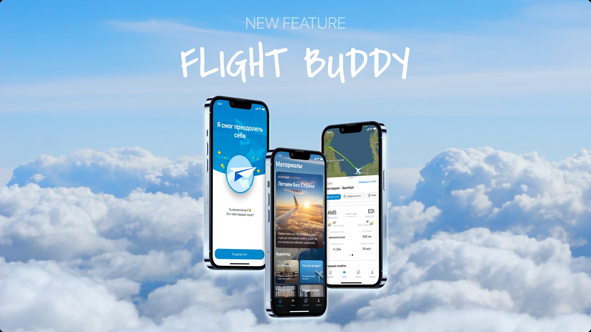
Редизайн мобильного приложения против аэрофобии - от диагностики тревожности до live-сопровождения полёта, превращающий сложную психологическую методику в связный продуктовый путь, а не набор экранов.
Роль: UX-UI дизайнер - единственный дизайнер на проекте 7-8 месяцев, полный редизайн и доработка функционала и внешнего вида приложения.
Продукт: Мобильное приложение (iOS/Android) против аэрофобии - диагностика, обучение, практики саморегуляции, live-сопровождение в день вылета.
Пользователи: Люди с разным уровнем аэрофобии - от лёгкой тревожности до полного избегания перелётов; сегментация происходит через квиз и тест на входе.
Задача: Провести полный редизайн и достроить недостающие сценарии так, чтобы путь пользователя от тревоги к спокойному полёту стал целостным.
Особенность: Работа без прямого доступа к авторским методикам (пилоту и психологу) - архитектурные решения принимаются самостоятельно, через продакт.
Что сделано: Live-карта полёта как состояние-машина из начальных экранов, полный путь пользователя, дизайн-система в двух языковых версиях.
Приложение уже присутствовало на рынке, но без целостной архитектуры и полного функционала. Я вошла в проект как единственный дизайнер, без прямого доступа к автору методики (пилоту и психологу) - все вводные приходили через продакт-менеджера, часто в неполном виде. Решения по интерпретации методики, приоритизации сценариев и архитектуре продукта принимала самостоятельно, сверяя логику через тестирование продукта на себе. Общая карта флоу: онбординг → обучение → практики → сопровождение в день полёта.
Для меня это кейс про то, что уровень продуктового дизайнера определяется не количеством экранов, а тем, берёт ли он на себя архитектурные решения при неполных вводных.
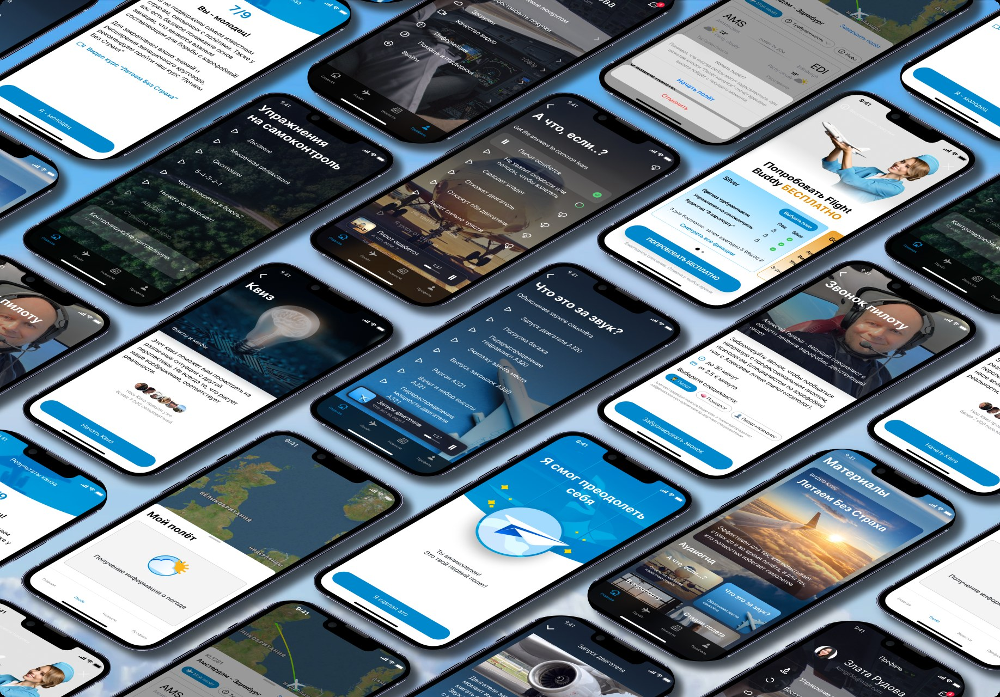
Ключевой вызов - перевести психологическую методику (когнитивно-поведенческая терапия в работе со страхом) в связный продуктовый путь: от диагностики тревожности к обучению, от обучения к практике, от практики к сопровождению в момент максимального стресса - реальном полёте. Это требовало продуктового решения о структуре всего пути пользователя, а не последовательности экранов.
Построила дизайн-систему, которая держит согласованность двух языковых версий и всего объёма экранов в одиночку, без команды дизайнеров.
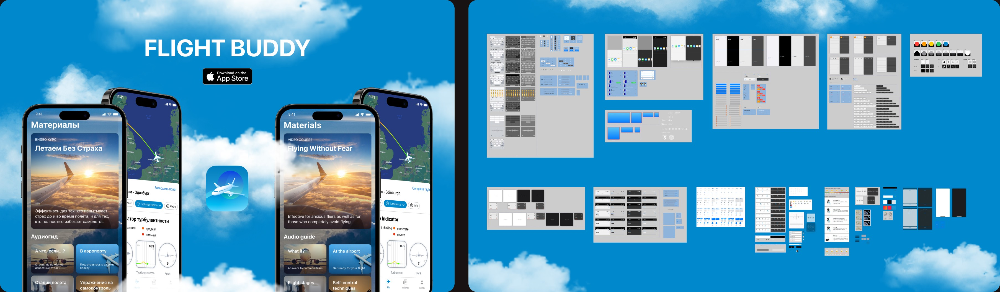
Первое знакомство с продуктом - мягкий, некритичный тон подачи с первого экрана, важный для пользователя, у которого уже есть тревога.
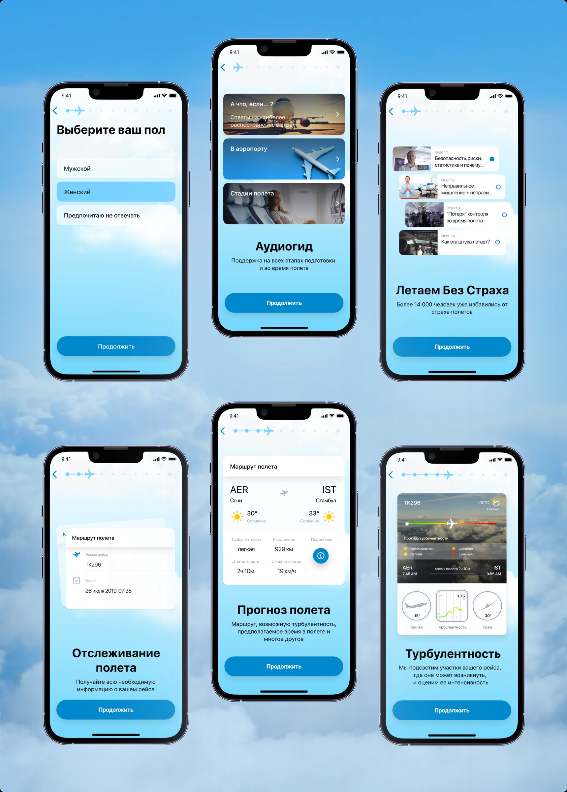
Квиз определяет тип и уровень тревожности пользователя - точка входа в персонализацию всего дальнейшего пути. Контент методики готовил консультант, моя задача - архитектура вопросов и логика перехода к результату.
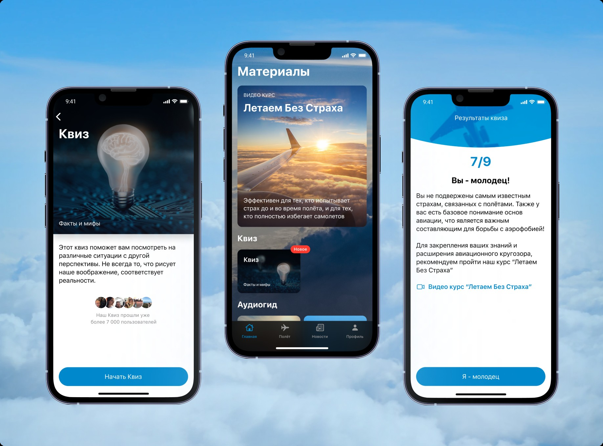
Курсы о том, как работает самолёт, и библиотека «что это за звук» - снятие тревоги через объяснение происходящего, а не через избегание.
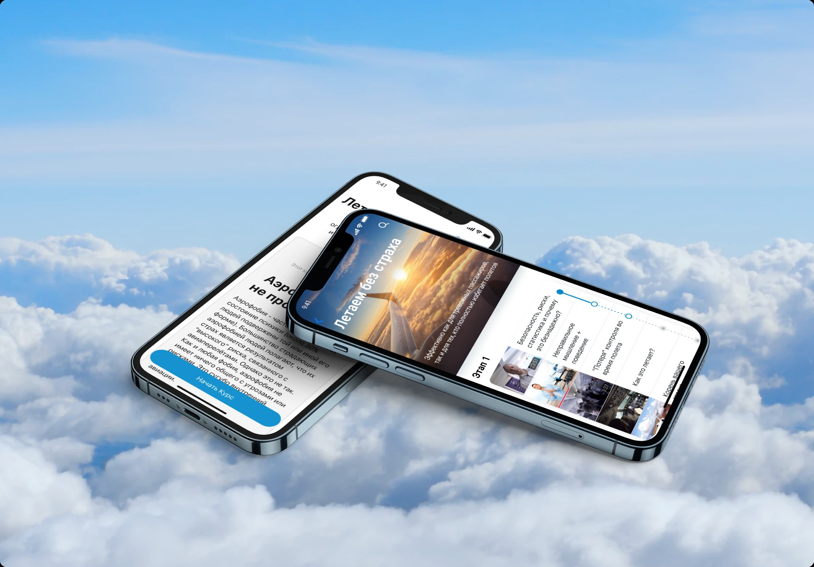
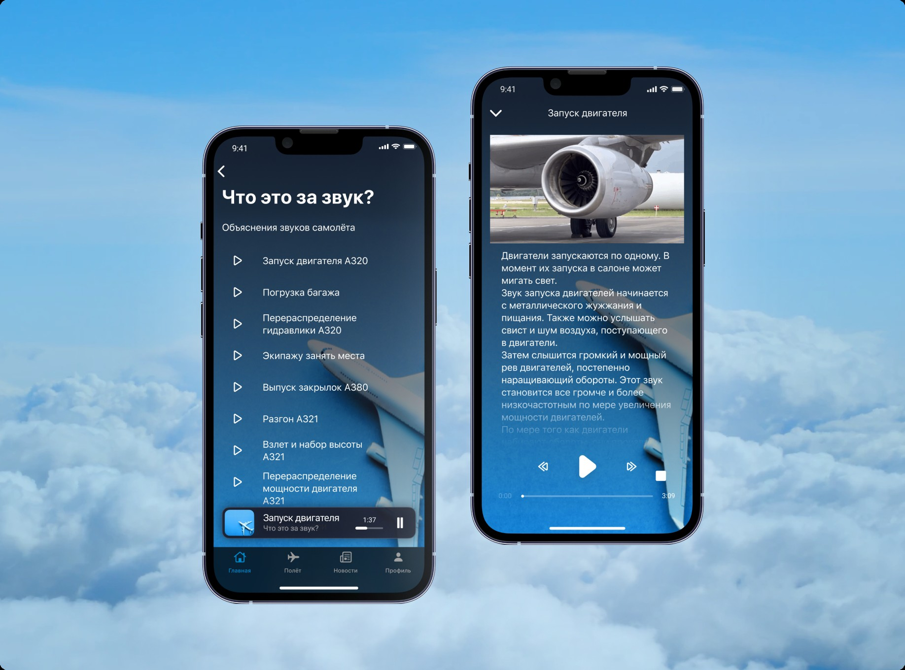
Проработка тревожных сценариев по КПТ-подходу и дыхательные / поведенческие практики, привязанные к стадии полёта.
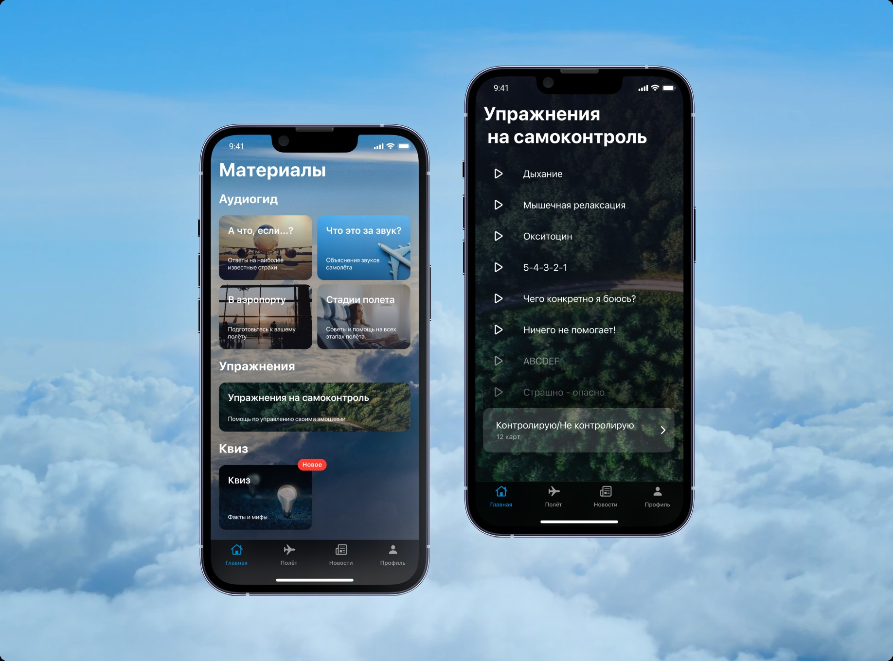
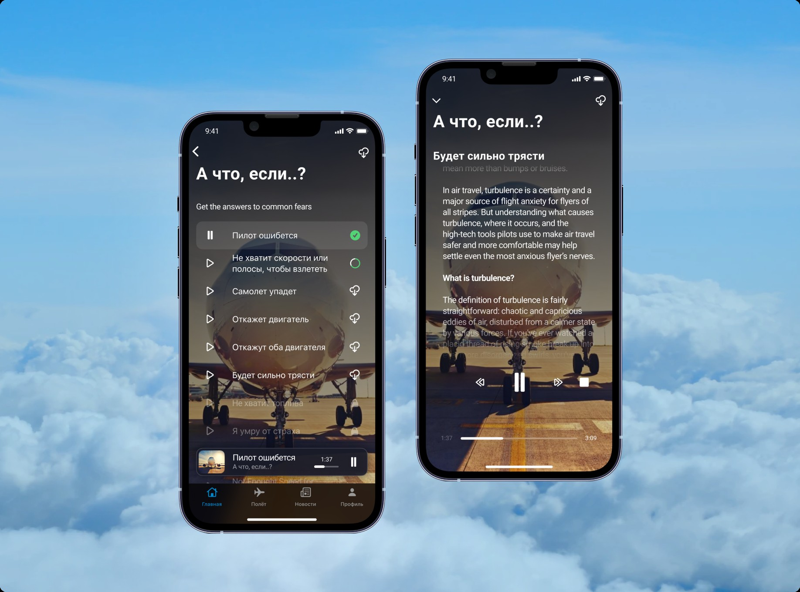
Десятки состояний одного экрана, которые нужно было согласовать визуально и логически связать между собой без потери контекста для тревожного пользователя - состояние-машина, а не набор отдельных мокапов.
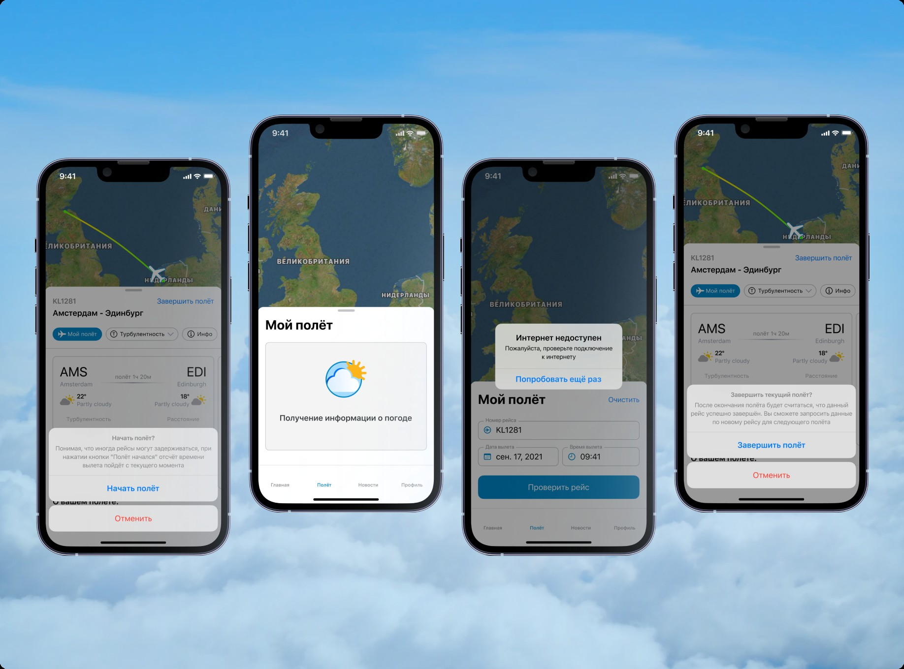
Возможность обратиться напрямую к пилоту с вопросом в момент тревоги - фича, которой нет в типовых продуктах категории.
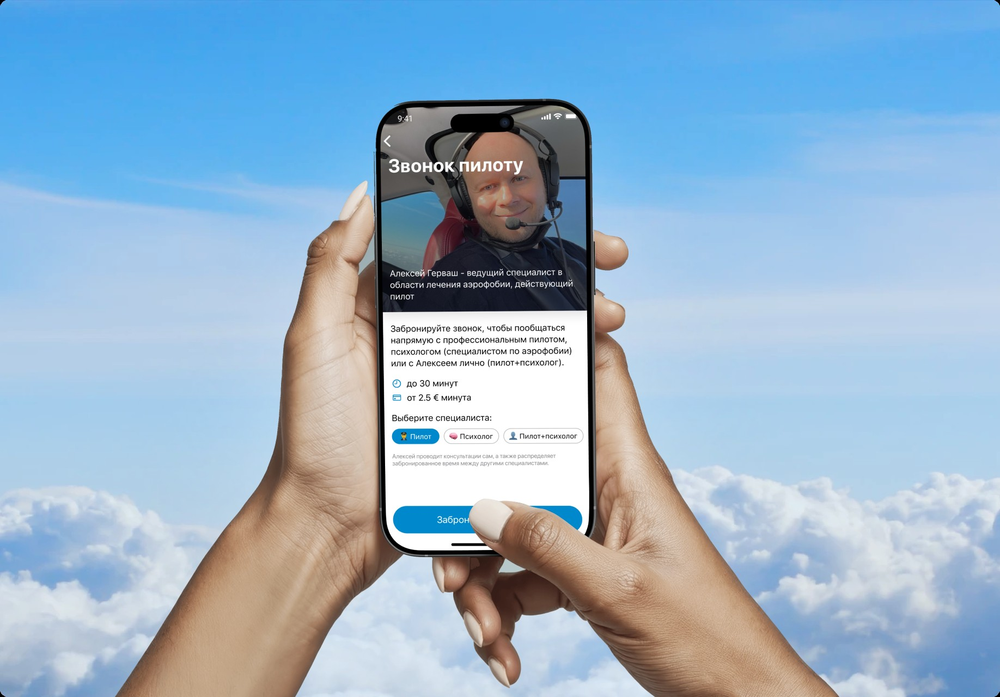
Профиль и ачивки - удержание через видимый результат прохождения практик.
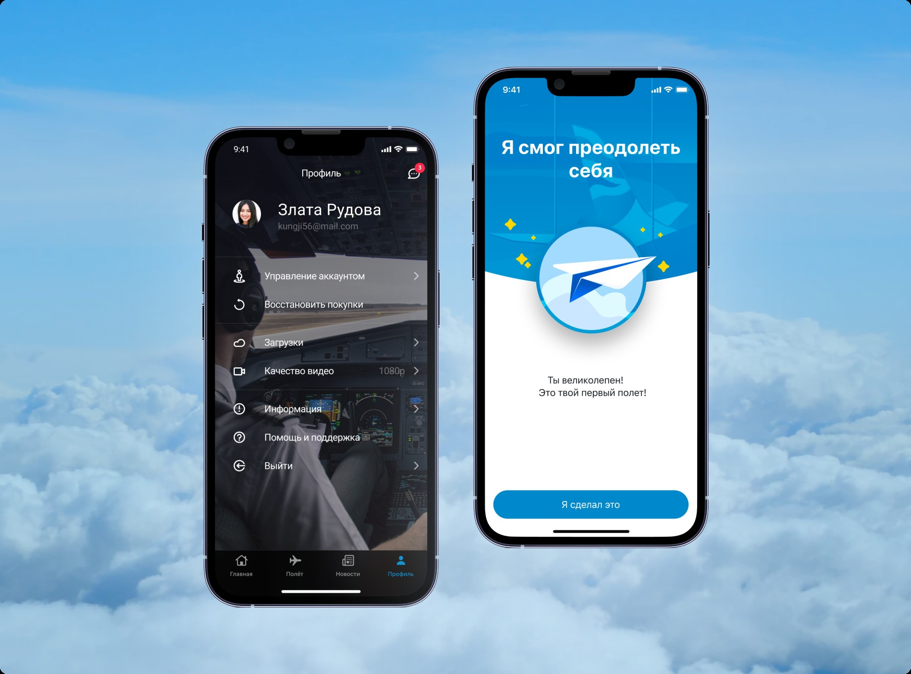
Подписочная модель с несколькими тарифными планами и описанием всех включённых функций.
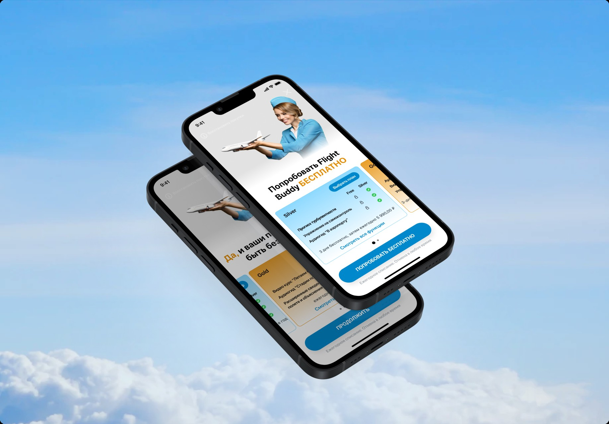
Продукт с сохранённой экспертной логикой продвигается на рынке и работает сейчас. Уровень сложности архитектуры - динамические состояния, поведенческий дизайн, кросс-языковая система, реализованная в двух языковых версиях (RU/EN) - сопоставим с задачами, которые в продуктовых командах обычно распределены между несколькими ролями.
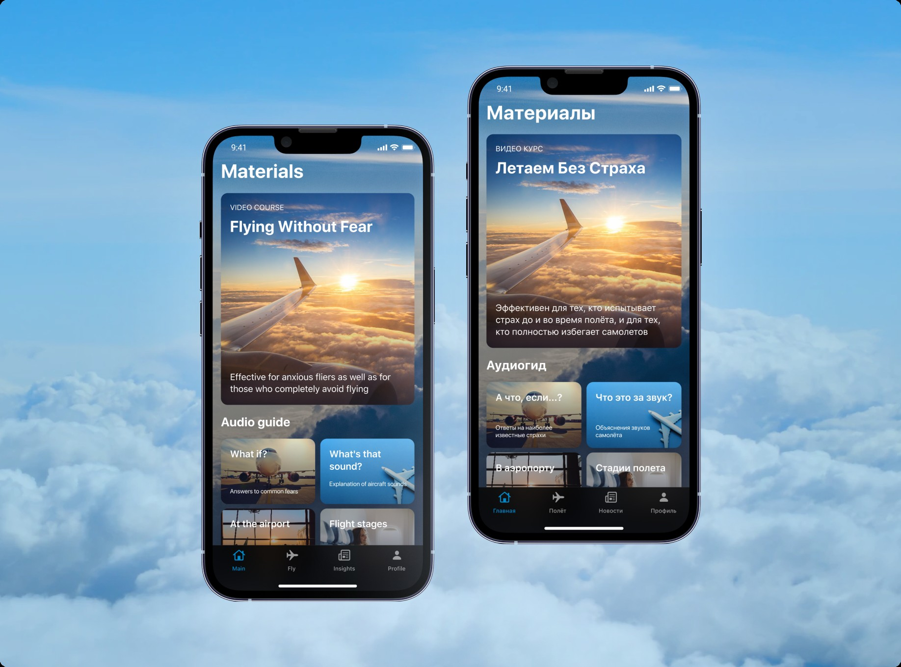